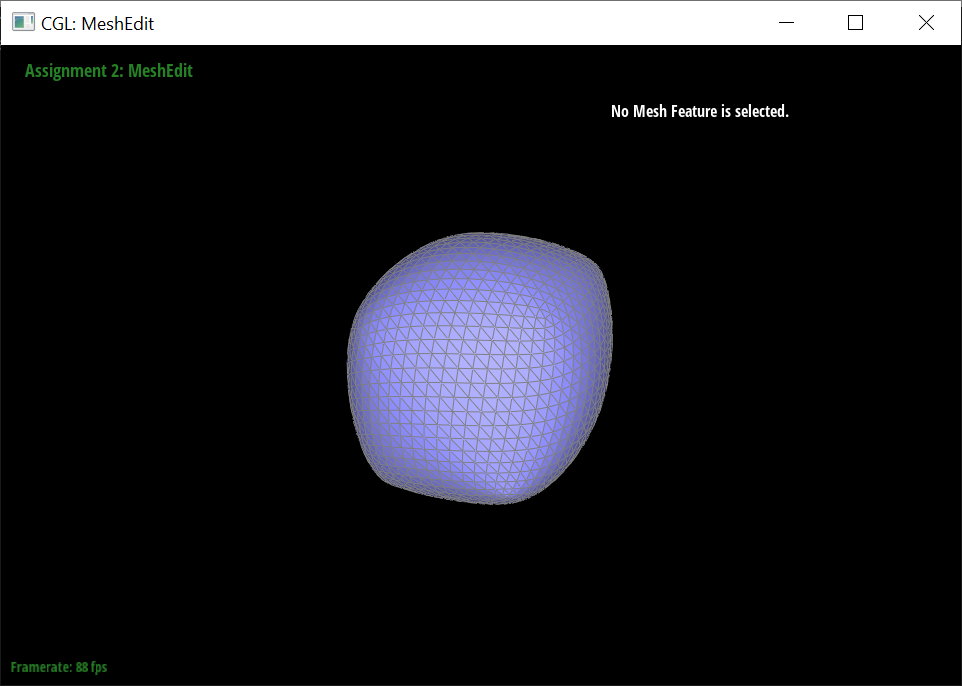

Overview
In the MeshEdit project, we built Bezier curves and surfaces using de Casteljau algorithm and manipulated the meshes by altering their underlying half-edge data structure. Utilizing the functionality we built, we were also able to perform loop subdivisions to upsample input meshes.
Section I: Bezier Curves and Surfaces
Part 1: Bezier Curves with 1D de Casteljau Subdivision
Briefly explain de Casteljau's algorithm and how you implemented it in order to evaluate Bezier curves.
De Casteljau's algorithm is a recursive method used to evaluate polynomials that are Bézier curves.
For each recursive iteration, we iterate through all points and take each of the ith and i+1th points to calculate a new point using the formula p'i(t) = (1-t)*pi + t*pi+1. After one layer of recursion,
we will have (total_points-1) number of new points that are used for the next layer of function call.
The evaluation ends when we produce one singular point from the function call, with the position of that point
being the position of the Bezier curve evaluated at t.
Take a look at the provided .bzc files and create your own Bezier curve with 6 control points of your choosing. Use this Bezier curve for your screenshots below. Show screenshots of each step / level of the evaluation from the original control points down to the final evaluated point. Press E to step through. Toggle C to show the completed Bezier curve as well.
|
|
|
|
|
|
|
|
|
Show a screenshot of a slightly different Bezier curve by moving the original control points around and modifying the parameter \(t\) via mouse scrolling.

Part 2: Bezier Surfaces with Separable 1D de Casteljau
Briefly explain how de Casteljau algorithm extends to Bezier surfaces and how you implemented it in order to evaluate Bezier surfaces.Given a matrix of n * m control points, we can interpret each of the rows as representing a Bezier curve defined by the m control points in that row. For these row Bazier curves, we parameterize on u. Using the process described in part 1, we will obtain a set of n points, which can then be treated as the control points of another Bezier curve, which we will parameterize with v this time. Using this process, we get the Bezier surfaces from evaluations across the (u, v) space.
Show a screenshot of bez/teapot.bez (not .dae) evaluated by your implementation.

Section II: Triangle Meshes and Half-Edge Data Structure
Part 3: Area-Weighted Vertex Normals
Briefly explain how you implemented the area-weighted vertex normals.We keep a "running sum" of the normal vectors, which is initiated to the 0 vector. We iterate through the half-edges rooted at the vertex of interest. For each half edge:
Show screenshots of dae/teapot.dae (not .bez) comparing teapot shading with and without vertex normals. Use Q to toggle default flat shading and Phong shading.
|
|
|
Part 4: Edge Flip
Briefly explain how you implemented the edge flip operation and describe any interesting implementation / debugging tricks you have used.
First, we perform a boundary check, this ensures that we are not flipping a boundary edge.
Then, we list out all relevant elements by declaring them as local variables - this includes the 6 half-edges, 2 faces, and 4 vertices.
After that, we "draw out" the new mesh and relabel the half edges accordingly using the HalfEdge::setNeighbors() method.
Finally, we reassign the half-edge field for each of the vertices and faces to point to a correct half-edge.
Show screenshots of the teapot before and after some edge flips.
|
|
|
Write about your eventful debugging journey, if you have experienced one.
The pointer assignments in general were quite easy to mess up. What ended up helping us was physically drawing out the image before/after the flip, and then making sure our pointer assignments aligned with what we aimed for.
Part 5: Edge Split
Briefly explain how you implemented the edge split operation and describe any interesting implementation / debugging tricks you have used.
HalfEdge::setNeighbors()is_new fields for edges. Show screenshots of a mesh before and after some edge splits.
|
|
|
Show screenshots of a mesh before and after a combination of both edge splits and edge flips.
|
|
|
Write about your eventful debugging journey, if you have experienced one.
While the initial implementation seemed to work fine, we eventually found out that the results from loop subdivisions in the next
part didn't look quite right. After setting up breakpoints and tracking the upsampling process, we found out that the source of the
error was actually in part 5 - where our is_new flag was incorrectly set for one of the new edges. The upsampling process
worked fine after we solved this issue.
Part 6: Loop Subdivision for Mesh Upsampling
Briefly explain how you implemented the loop subdivision and describe any interesting implementation / debugging tricks you have used.
Vertex::newPosition. At this point, we also want to mark each vertex as being
a vertex of the original mesh by setting their Vertex::isNew to false.
Edge::newPosition. We also
mark each existing edge by setting their Edge::isNew as false.
Vertex::isNew to true.
Vertex::position to match their Vertex::newPosition.
Take some notes, as well as some screenshots, of your observations on how meshes behave after loop subdivision. What happens to sharp corners and edges? Can you reduce this effect by pre-splitting some edges?
Loop subdivision makes the meshes become noticeably smoother. For meshes like the teapot, this means that they will appear to have a higher quality.

|
|
Sharp corners and edges become less noticeable as the loop subdivision smoothes them out. One method of reducing this effect is to subdivide and manually create more faces around the corners/edges that you want to preserve.
|
|
|
|
|
|
Load dae/cube.dae. Perform several iterations of loop subdivision on the cube. Notice that the cube becomes slightly asymmetric after repeated subdivisions. Can you pre-process the cube with edge flips and splits so that the cube subdivides symmetrically? Document these effects and explain why they occur. Also explain how your pre-processing helps alleviate the effects.
|
|

|
The asymetry issue that is observed after subdividing the cube stems from the fact that the original triangularization of the cube is asymetric. Observe any face of the cube - the square is split by only one diagonal. This means that the locations of the new vertices after the first subdivision will be asymmetric, which then makes the locations vertices after second subdivision to be asymmetric, so on so forth.
|
|
|
To alleviate this issue, we can preprocess the cube by splitting each diagonal edge, which ensures that each face of the cube has symmetric triangularization. This will ensure symmetry of the vertex locations after the first subdivision, which then ensures symmetry after the second subdivision, so on so forth.